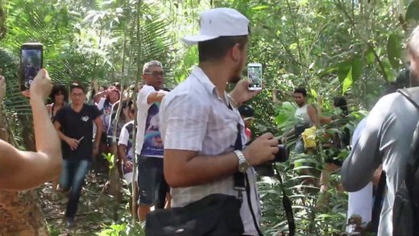

00:01:20.047
Participantes se reúnem em meio à vegetação e registram a atividade com câmeras e celulares durante a sequência do Sairé.
Entorno de Alter do Chão, Santarém (PA) · provável
A montagem vem logo após a apresentação da busca dos mastros, que abre as atividades do Sairé no relato do vídeo. O ponto da mata não é identificado.
Transcrição · 00:00:54 | 00:01:02 | 00:01:12 | 00:01:22
Turismo Aqui — quadro de vídeo publicado no YouTube
Referência 1